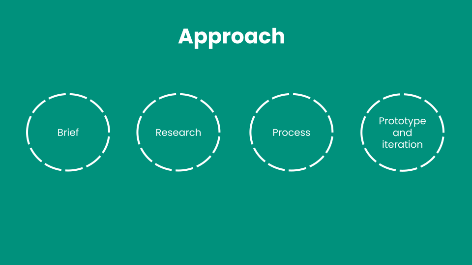
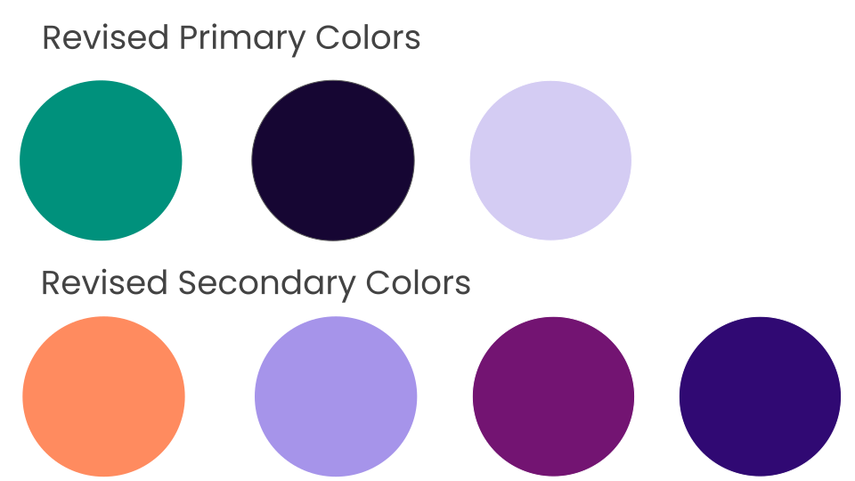
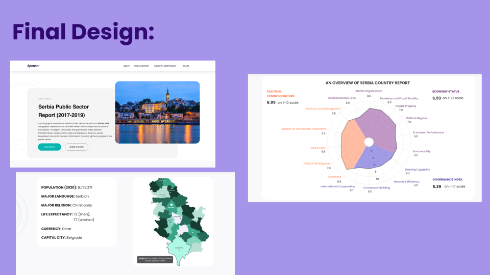
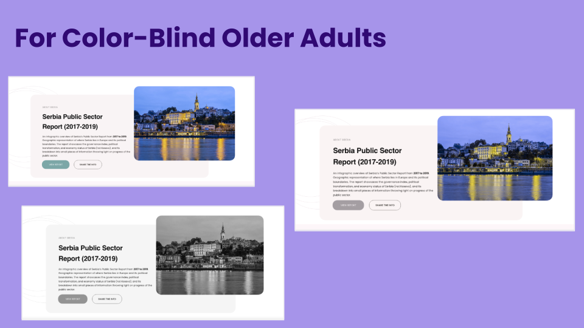
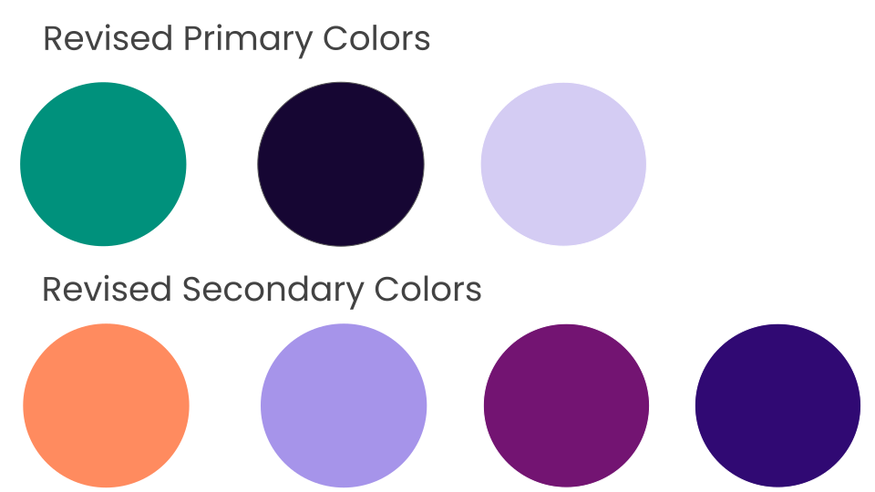
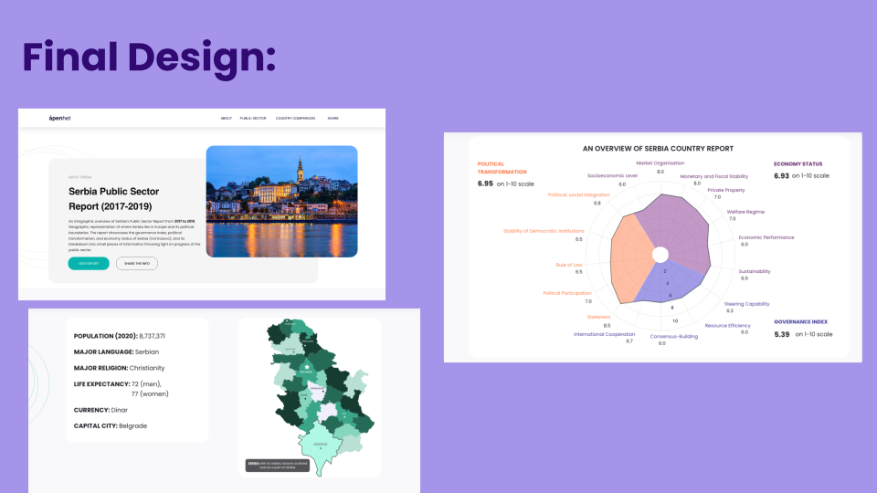
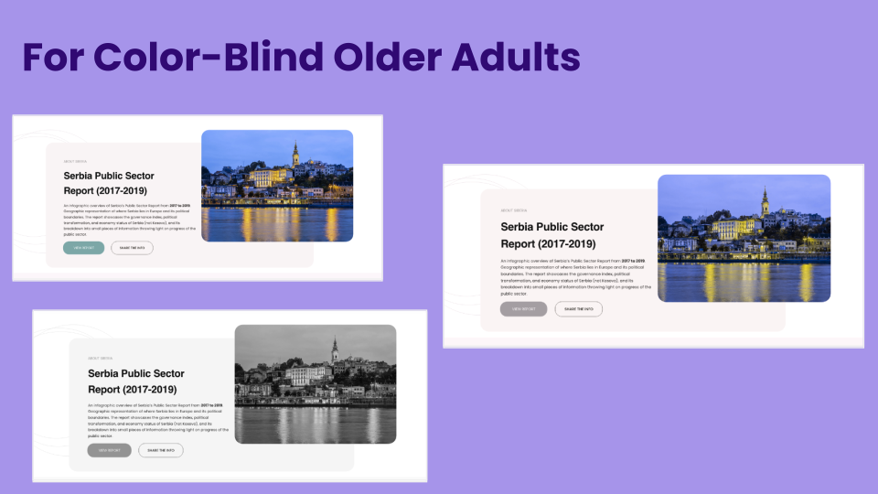
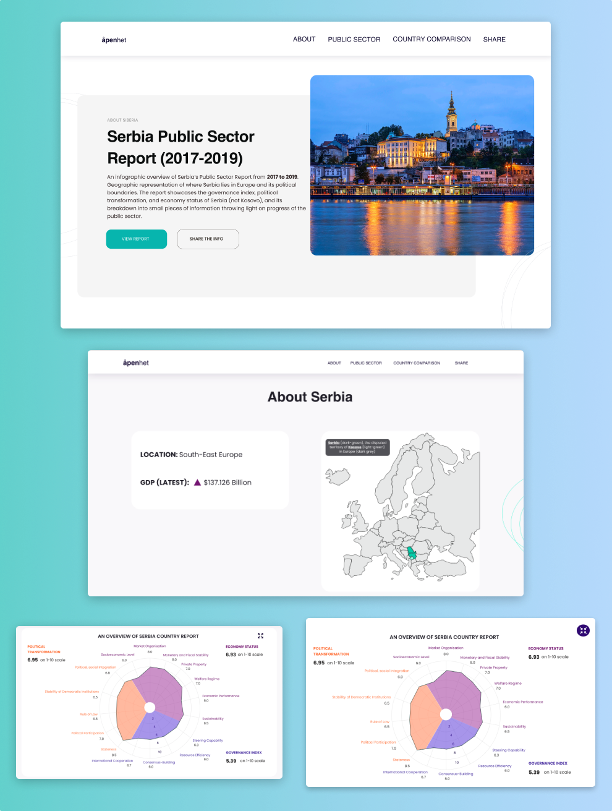

Project Context: To design an interactive information website to showcase development of Serbia’s public sector from 2017 to 2019 through visualisations for a Norway-based client, Åpenhet.
Design Question 1 How to define the design challenge given by the client and who are the right set of user-personas?
Design Question 2 How to present complex information of public sector that is meaningful and resourceful?
Primary group (age 45 to 59 years)– Diplomats/Public Relation professionals, professionals from EU Commision, journalists, and lobbyists.
Secondary group– General folk and the citizens of the country.
The user-persona interviews to the primary group were sent. Its analysis revealed that people working as diplomats and lobbyists often need to deliver presentations. They aim to convince their audience who can be journalists and Public Relations. Prefer to show facts in infographic forms. The journalists prefer to use data visualisations to create engaging and appealing news stories. They feel infographics occupy less space, showing large amounts of data at one go. Used empathy map model to understand the needs and wants of the user-personas. With this tool, I was able to have a deeper understanding of different stages of what the user might feel, think, say, and do during the time of using the presentation tool. Used ‘lobbyist’ as a user-persona. The challenge was: to define the problem, user-personas, and the customer journey.

To get a deeper understanding of my user-personas, I used a research paper by Chisnell and Redish called Audience-Centered Heuristics: Older Adults. This carries heuristics on parameters to consider while designing websites for older adults. I learnt it is also useful to consider the color blindness factor for the user-personas when it comes to data visualisations.

A personalised and optimized information presentation tool, optimised for its user-personas. Showcases data in an engaging and easy-to-digest way.
Color-blindness: Colors chosen considers color-blind people
Eyesight weak users:High contrast between colors
 





The client used the prototype as inspiration to design a presentation tool
Experience the product yourself here!
Shoot me a message atdaisykmr2@gmail.com
I love to design and simplify things for a better user experience.